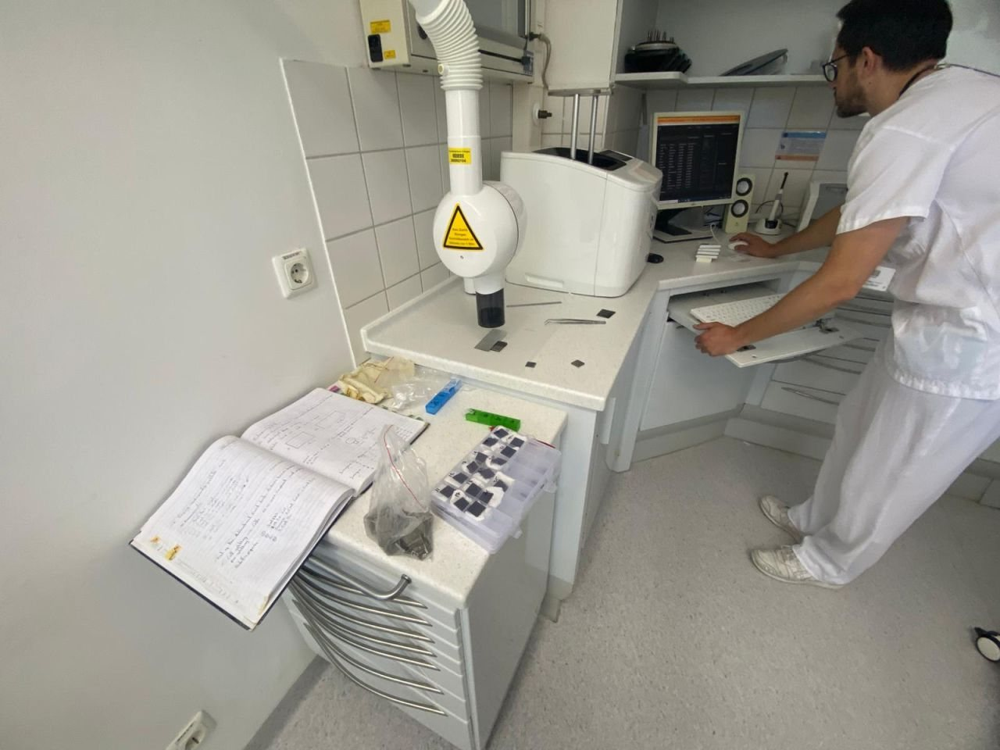
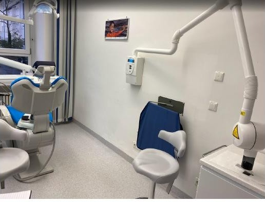
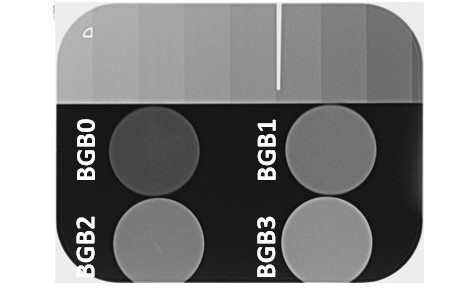
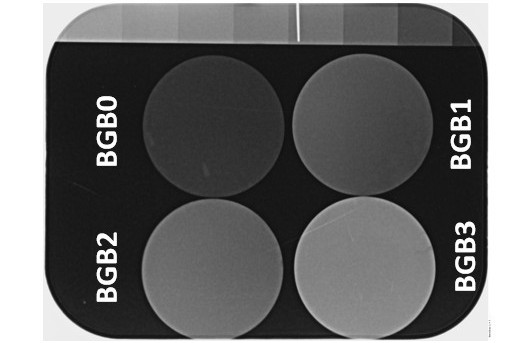
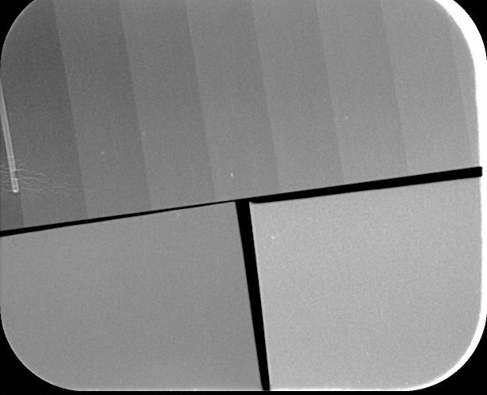
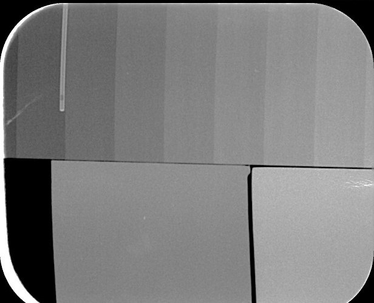
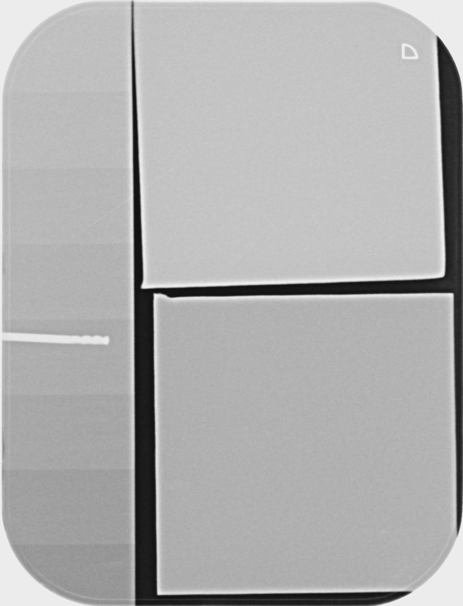
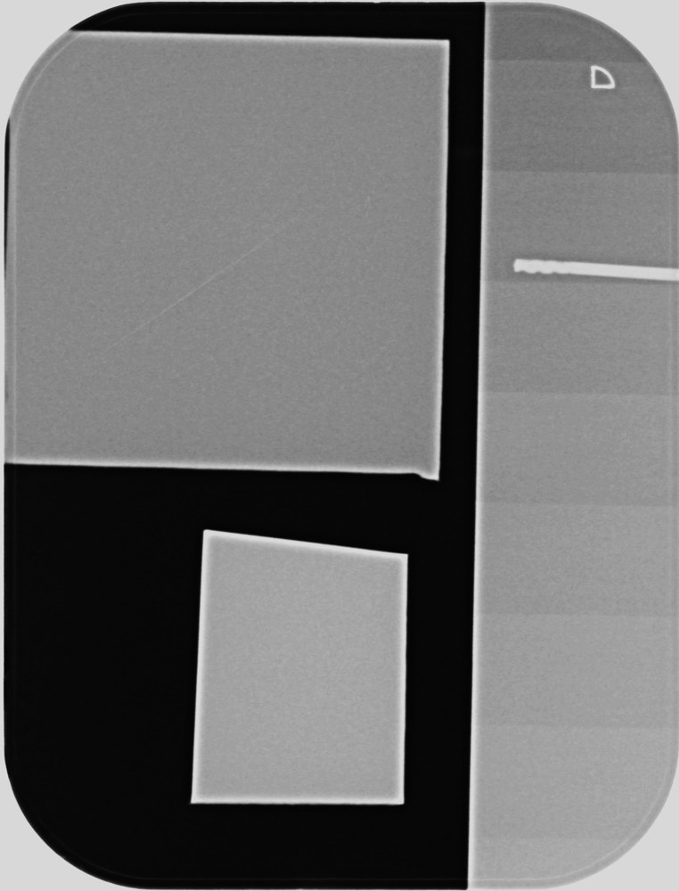

RadiopacityRöntgenopazitätRádioopacitaRadio-opacitéRadiopacidad
Radiographs show how much X-ray contrast bismuth adds to the glasses and to the coated titanium alloy.Röntgenbilder zeigen, wie viel Röntgenkontrast Bismut den Gläsern und der beschichteten Titanlegierung verleiht.Röntgenové snímky ukazujú, aký röntgenový kontrast pridáva bizmut sklám a povlakovanej titánovej zliatine.Les radiographies montrent le contraste radiographique que le bismuth apporte aux verres et à l’alliage de titane revêtu.Las radiografías muestran cuánto contraste de rayos X aporta el bismuto a los vidrios y a la aleación de titanio recubierta.
Where and howWo und wieKde a akoOù et commentDónde y cómo
The radiographs were acquired at University Hospital Erlangen (Uniklinikum Erlangen) together with Priv.-Doz. Dr. med. dent. José Ignacio Zorzin, collaborator of the project. A dental X-ray unit images each sample next to an aluminium step wedge, following the comparison principle of ISO 13116, so that the brightness of each sample can be compared with known aluminium thicknesses.Die Röntgenbilder entstanden am Uniklinikum Erlangen gemeinsam mit Priv.-Doz. Dr. med. dent. José Ignacio Zorzin, Partner des Projekts. Ein zahnärztliches Röntgengerät bildet jede Probe neben einem Aluminium-Stufenkeil ab, nach dem Vergleichsprinzip der ISO 13116, sodass die Helligkeit jeder Probe mit bekannten Aluminiumdicken verglichen werden kann.Röntgenové snímky vznikli v Uniklinikum Erlangen spolu s Priv.-Doz. Dr. med. dent. Josém Ignaciom Zorzinom, spolupracovníkom projektu. Zubný röntgenový prístroj sníma každú vzorku vedľa hliníkového stupňovitého klinu podľa princípu porovnania normy ISO 13116, aby sa jas každej vzorky dal porovnať so známymi hrúbkami hliníka.Les radiographies ont été réalisées à l’hôpital universitaire d’Erlangen (Uniklinikum Erlangen) avec le Priv.-Doz. Dr. med. dent. José Ignacio Zorzin, collaborateur du projet. Un appareil de radiographie dentaire image chaque échantillon à côté d’un coin à gradins en aluminium, selon le principe de comparaison de la norme ISO 13116, afin de comparer la luminosité de chaque échantillon à des épaisseurs d’aluminium connues.Las radiografías se adquirieron en el Hospital Universitario de Erlangen (Uniklinikum Erlangen) junto con Priv.-Doz. Dr. med. dent. José Ignacio Zorzin, colaborador del proyecto. Un equipo de rayos X dental obtiene la imagen de cada muestra junto a una cuña escalonada de aluminio, según el principio de comparación de la ISO 13116, para comparar la claridad de cada muestra con espesores de aluminio conocidos.




All radiographs on this page were acquired at University Hospital Erlangen (Uniklinikum Erlangen) with Priv.-Doz. Dr. med. dent. José Ignacio Zorzin.Alle Röntgenbilder auf dieser Seite entstanden am Uniklinikum Erlangen mit Priv.-Doz. Dr. med. dent. José Ignacio Zorzin.Všetky röntgenové snímky na tejto stránke boli zhotovené v Uniklinikum Erlangen s Priv.-Doz. Dr. med. dent. Josém Ignaciom Zorzinom.Toutes les radiographies de cette page ont été réalisées à l’Uniklinikum Erlangen avec le Priv.-Doz. Dr. med. dent. José Ignacio Zorzin.Todas las radiografías de esta página se adquirieron en el Hospital Universitario de Erlangen (Uniklinikum Erlangen) con el Priv.-Doz. Dr. med. dent. José Ignacio Zorzin.
RadiographsRöntgenbilderRöntgenové snímkyRadiographiesRadiografías
Glass pellets with more bismuth look brighter on the radiograph, and coated plates look brighter than bare titanium alloy.Glaspellets mit mehr Bismut erscheinen auf dem Röntgenbild heller, und beschichtete Platten heller als unbeschichtete Titanlegierung.Sklenené pelety s vyšším obsahom bizmutu sú na röntgenovej snímke svetlejšie a povlakované platničky sú svetlejšie ako nepovlakovaná titánová zliatina.Les pastilles de verre plus riches en bismuth apparaissent plus claires sur la radiographie, et les plaques revêtues plus claires que l’alliage de titane nu.Las pastillas de vidrio con más bismuto se ven más claras en la radiografía, y las placas recubiertas se ven más claras que la aleación de titanio sin recubrir.












Plasma sprayPlasmaspritzenPlazmové striekanieProjection plasmaProyección por plasmaSpray coatingSpray CoatingSpray coatingSpray coatingSpray coatingElectrophoretic depositionElektrophoretische AbscheidungElektroforetická depozíciaDépôt électrophorétiqueDeposición electroforética